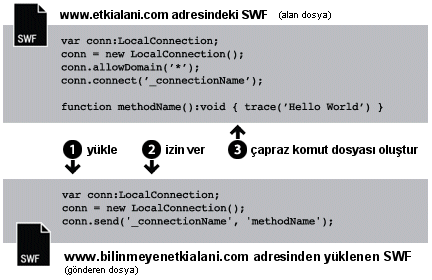
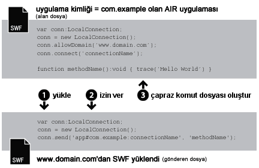
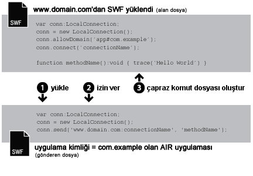

| Paket | flash.net |
| Sınıf | public class LocalConnection |
| Miras Alma | LocalConnection |
| Dil Sürümü: | ActionScript 3.0 |
| Çalışma Zamanı Sürümleri: | AIR 1.0, Flash Player 9, Flash Lite 4 |
- Tek bir SWF dosyası içinde
- Birden çok SWF dosyası arasında
- AIR uygulamalarındaki içerik (SWF tabanlı veya HTML tabanlı) arasında
- AIR uygulamalarındaki içerik (SWF tabanlı veya HTML tabanlı) ve tarayıcıda çalışan SWF içeriği arasında
AIR profil desteği: Bu özellik tüm masaüstü işletim sistemlerinde ve tüm AIR for TV aygıtlarında desteklenir ancak mobil aygıtlarda desteklenmez. Desteği çalışma zamanında LocalConnection.isSupported özelliğini kullanarak test edebilirsiniz. Birden fazla profilde API desteği ile ilgili daha fazla bilgi için bkz. AIR Profil Desteği.
Not: AIR for TV aygıtları yalnızca, AIR uygulamalarındaki SWF tabanlı içerikler arasında iletişimi destekler.
Yerel bağlantılar, fscommand() veya JavaScript kullanılmadan SWF dosyaları arasında bu türde bir bağlantı sağlar. LocalConnection nesneleri yalnızca aynı istemci bilgisayar üzerinde çalışan dosyalar (ancak farklı uygulamalarda çalışıyor olabilir) arasında iletişim kurabilir; örneğin bir tarayıcıda çalışan bir dosya ve Adobe AIR'da çalışan bir SWF dosyası.
ActionScript 3.0'da oluşturulan LocalConnection nesneleri ActionScript 1.0 veya 2.0'da oluşturulan LocalConnection nesneleriyle iletişim kurabilir. Bu durumun tersi de geçerlidir: ActionScript 1.0 veya 2.0'da oluşturulan LocalConnection nesneleri ActionScript 3.0'da oluşturulan LocalConnection nesneleriyle iletişim kurabilir. Flash Player farklı versiyonlardaki LocalConnection nesneleri arasındaki bu iletişimi farklı şekillerde işler.
LocalConnection nesnesine geri çağrı yöntemleri eklemenin üç yolu vardır:
- LocalConnection sınıfını alt sınıfa ayırın ve yöntemler ekleyin.
-
LocalConnection.clientözelliğini, yöntemleri uygulayan bir nesneye ayarlayın. - LocalConnection öğesini genişleten ve dinamik olarak yöntemler ekleyen bir dinamik sınıf oluşturun.
İki dosyası arasında iletişim kurmak amacıyla LocalConnection nesnelerinin nasıl kullanıldığını anlamak için her dosyada kullanılan komutlar tanımlamak fayda sağlar. Bir dosya receiving dosyası olarak adlandırılır; bu, çağrılacak yöntemi içeren dosyadır. Alma dosyası bir LocalConnection nesnesi ve connect() yöntemine bir çağrı içermelidir. Diğer dosya sending dosyası olarak adlandırılır; bu, yöntemi çağıran dosyadır. Gönderme dosyası başka bir LocalConnection nesnesi ve send() yöntemine bir çağrı içermelidir.
send() ve connect() yönteminin kullanımı, dosyalarının aynı etki alanında, tahmin edilebilir etki alanı adlarına sahip farklı etki alanlarında veya tahmin edilemeyen ya da dinamik etki alanı adlarına sahip farklı etki alanlarında olmasına göre farklılık gösterir. Şu paragraflar her biri için kod örnekleri olmak üzere üç farklı durumu açıklamaktadır:
Aynı etki alanı. Bu, aynı etki alanı iletişimine varsayılan olarak izin verildiğinden, yalnızca aynı etki alanında olan LocalConnection nesneleri arasında iletişimi sağlamak için bir LocalConnection nesnesinin en kolay kullanım yoludur. Aynı etki alanındaki iki dosyası iletişim kurduğunda özel güvenlik önlemleri uygulamanıza gerek yoktur veconnectionName parametresi için aynı değeri connect() ve send() yöntemlerine iletmeniz yeterlidir:

// receivingLC is in http://www.domain.com/receiving.swf
receivingLC.connect('myConnection');
// sendingLC is in http://www.domain.com/sending.swf
// myMethod() is defined in sending.swf
sendingLC.send('myConnection', 'myMethod');
Tahmin edilebilir etki alanı adlarına sahip farklı etki alanları. Farklı etki alanlarından gelen iki SWF dosyası iletişim kurduğunda, allowDomain() yöntemini çağırarak iki etki alanı arasında iletişimi sağlamalısınız. Ayrıca, alıcı LocalConnection nesnesinin etki alanı adını kullanarak send() yöntemindeki bağlantı adını nitelendirmelisiniz:

// receivingLC is in http://www.domain.com/receiving.swf
receivingLC.allowDomain('www.anotherdomain.com');
receivingLC.connect('myConnection');
// sendingLC is in http://www.anotherdomain.com/sending.swf
sendingLC.send('www.domain.com:myConnection', 'myMethod');
Tahmin edilemeyen etki alanı adlarına sahip farklı etki alanları. Bazen alıcı LocalConnection nesnesine sahip dosyasının etki alanları arasındaki taşınabilirliğini artırmak isteyebilirsiniz. Etki alanı adını send() yönteminde belirtmekten kaçınmak, ancak alıcı ve gönderen LocalConnection nesnelerinin aynı etki alanında olmadığını göstermek için, connect() ve send() çağrılarında bağlantı adının önüne bir alt çizgi (_) koyun. İki etki alanı arasında iletişimi sağlamak için, allowDomain() yöntemini çağırın ve LocalConnection çağrılarına izin vermek istediğiniz etki alanlarını iletin. Alternatif olarak, joker (*) argümanını tüm etki alanlarından gelen çağrılara izin verecek şekilde iletin:

// receivingLC is in http://www.domain.com/receiving.swf
receivingLC.allowDomain('*');
receivingLC.connect('_myConnection');
// sendingLC is in http://www.anotherdomain.com/sending.swf
sendingLC.send('_myConnection', 'myMethod');
Flash Player uygulamasından AIR uygulamasına. AIR uygulaması sanal alanında oluşturulan bir LocalConnection nesnesi, bağlantı öneki olarak etki alanı adı yerine özel bir dize kullanır. Bu dizenin biçimi şöyledir: app#appID.pubID, appID uygulama kimliği, pubID ise uygulamanın yayıncı kimliğidir. (AIR uygulaması bir yayıncı kimliği kullanıyorsa, yalnızca yayıncı kimliğini dahil edin.) Örneğin, bir AIR uygulamasının "com.example" uygulama kimliği varsa ve yayıncı kimliği yoksa, şunu kullanabilirsiniz: yerel bağlantı dizesi olarak app#com.example:myConnection. AIR uygulaması ayrıca, çağıran SWF dosyasının etki alanı başlangıç noktasını ileterek allowDomain() yöntemini de çağırmalıdır:

// receivingLC is an AIR application with app ID = com.example (and no publisher ID)
receivingLC.allowDomain('www.domain.com');
receivingLC.connect('myConnection');
// sendingLC is in http://www.domain.com/sending.swf
sendingLC.send('app#com.example:myConnection', 'myMethod');
Not: Bir AIR uygulaması SWF öğesini AIR uygulaması sanal alanının dışında yüklerse, bu SWF ile yerel bir bağlantı kurma kuralları, Flash Player'da çalışan bir SWF ile bağlantı kurma kurallarıyla aynıdır.
AIR uygulamasından Flash Player'a. Bir AIR uygulaması, Flash Player çalışma zamanında çalışan bir SWF ile iletişim kurduğunda, ikisi arasında iletişim kurulmasına allowDomain() yöntemini çağırıp AIR uygulamasının bağlantı önekinde ileterek izin vermelisiniz. Örneğin AIR uygulamasının "com.example" şeklinde bir uygulama kimliği varsa ve yayıncı kimliği yoksa, dizeyi iletebilirsiniz: allowDomain() yöntemine app#com.example. Ayrıca send() yöntemindeki bağlantı adını, LocalConnection nesnesinin etki alanı adıyla nitelikli hale getirmelisiniz (yerel dosya sisteminden yüklenen SWF dosyaları için etki alanı olarak "localhost" kullanın):

// receivingLC is in http://www.domain.com/receiving.swf
receivingLC.allowDomain('app#com.example');
receivingLC.connect('myConnection');
// sendingLC is an AIR application with app ID = com.example (and no publisher ID)
sendingLC.send('www.domain.com:myConnection', 'myMethod');
Bir AIR uygulamasından başka bir AIR uygulamasına. İki AIR uygulaması arasında iletişim kurmak için,allowDomain() yöntemini çağırıp gönderen AIR uygulamasının bağlantı önekinde ileterek, iki uygulama arasında iletişime izin vermelisiniz. Örneğin gönderen uygulamanın "com.example" şeklinde bir uygulama kimliği varsa ve yayıncı kimliği yoksa, dizeyi iletebilirsiniz: alan uygulamadaki allowDomain() yöntemine app#com.example. Ayrıca, alıcı LocalConnection nesnesinin bağlantı önekini kullanarak send() yöntemindeki bağlantı adını nitelendirmelisiniz:

// receivingLC is an AIR application with app ID = com.sample (and no publisher ID)
receivingLC.allowDomain('app#com.example');
receivingLC.connect('myConnection');
// sendingLC is an AIR application with app ID = com.example (and no publisher ID)
sendingLC.send('app#com.sample:myConnection', 'myMethod');
Tek bir dosyası içerisinde veri göndermek ve almak için LocalConnection nesnelerini kullanabilirsiniz ancak bu genel bir uygulama değildir.
send() ve connect() yöntemleri hakkında daha fazla bilgi için, LocalConnection.send() ve LocalConnection.connect() girişlerindeki connectionName parametresi hakkındaki açıklamalara bakın. Ayrıca allowDomain() ve domain girişlerine bakın.
İlgili API Öğeleri
flash.net.LocalConnection.allowDomain()
flash.net.LocalConnection.domain
 Miras Alınan Genel Özellikleri Gizle
Miras Alınan Genel Özellikleri Gizle Miras Alınan Genel Özellikleri Göster
Miras Alınan Genel Özellikleri Göster| Özellik | Tanımlayan: | ||
|---|---|---|---|
| client : Object
Üzerinde geri çağırma yöntemlerinin çağrıldığı nesneyi gösterir. | LocalConnection | ||
 | constructor : Object
Belirli bir nesne örneği için sınıf nesnesine veya yapıcı işlevine bir başvuru. | Object | |
| domain : String [salt okunur]
Geçerli dosyasının konumunun etki alanını temsil eden bir dize. | LocalConnection | ||
| isPerUser : Boolean
LocalConnection nesnesinin kapsamının geçerli kullanıcıyla sınırlı mı olduğunu (true) yoksa bilgisayardaki tüm kullanıcılara global olarak erişilebilir mi olduğunu (false) belirtir. | LocalConnection | ||
| isSupported : Boolean [statik] [salt okunur]
isSupported özelliği, LocalConnection sınıfı geçerli platformda destekleniyorsa true olarak, aksi halde false olarak ayarlanır. | LocalConnection | ||
| Yöntem | Tanımlayan: | ||
|---|---|---|---|
Bir LocalConnection nesnesi oluşturur. | LocalConnection | ||
| addEventListener(type:String, listener:Function, useCapture:Boolean = false, priority:int = 0, useWeakReference:Boolean = false):void
EventDispatcher nesnesi olan bir olay dinleyici nesnesini, dinleyicinin bir olayın bildirimini alması için kaydeder. | EventDispatcher | |
Bu LocalConnection örneğine LocalConnection çağrıları gönderebilen bir veya daha fazla etki alanını belirtir. | LocalConnection | ||
Bu LocalConnection nesnesine LocalConnection çağrıları gönderebilen bir veya daha fazla etki alanını belirtir. | LocalConnection | ||
Bir LocalConnection nesnesini kapatır (bağlantısını keser). | LocalConnection | ||
Bir send () komutu tarafından (gönderen LocalConnection nesnesi tarafından) gönderilen komutları almak için bir LocalConnection nesnesi hazırlar. | LocalConnection | ||
|
Olay akışına bir olay gönderir. | EventDispatcher | |
|
EventDispatcher nesnesinin belirli bir olay türü için kayıtlı dinleyicisi olup olmadığını kontrol eder. | EventDispatcher | |
|
Bir nesnenin belirli bir özelliğinin tanımlı olup olmadığını gösterir. | Object | |
|
Object sınıfının bir örneğinin parametre olarak belirtilen nesnenin prototip zincirinde olup olmadığını gösterir. | Object | |
|
Belirtilen özelliğin bulunup bulunmadığını ve numaralandırılabilir olup olmadığını gösterir. | Object | |
|
EventDispatcher nesnesinden bir dinleyiciyi kaldırır. | EventDispatcher | |
Connect(connectionName) yöntemiyle (alan LocalConnection nesnesinde) açılan bir bağlantıda methodName adlı yöntemi çağırır. | LocalConnection | ||
|
Dinamik bir özelliğin döngü işlemlerinde kullanılabilirliğini ayarlar. | Object | |
|
Bu nesnenin, yerel ayara özel kurallara göre biçimlendirilmiş dize temsilini döndürür. | Object | |
|
Belirtilen nesnenin dize olarak temsil edilen halini döndürür. | Object | |
|
Belirtilen nesnenin temel değerini döndürür. | Object | |
|
Bir olay dinleyicisinin bu EventDispatcher nesnesiyle mi, yoksa onun belirtilen olay türüne yönelik üst öğelerinden biriyle mi kayıtlı olduğunu kontrol eder. | EventDispatcher | |
| Olay | Özet | Tanımlayan: | ||
|---|---|---|---|---|
| [broadcast olayı] Flash Player veya AIR uygulaması işletim sistemi odağına gelip etkin olduğunda gönderilir. | EventDispatcher | ||
| Eşzamansız olarak, başka bir deyişle, yerel eşzamansız koddan bir istisna atıldığında gönderilir. | LocalConnection | |||
| [broadcast olayı] Çalışan Flash Player veya AIR uygulaması sistem odağını kaybettiğinde ve etkin olmayan duruma geldiğinde gönderilir. | EventDispatcher | ||
| LocalConnection.send() öğesine yapılan bir çağrı farklı bir güvenlik sanal alanına veri göndermeyi denediğinde gönderilir. | LocalConnection | |||
| Bir LocalConnection nesnesi durumunu bildirdiğinde gönderilir. | LocalConnection | |||
client | özellik |
client:Object| Dil Sürümü: | ActionScript 3.0 |
| Çalışma Zamanı Sürümleri: | AIR 1.0, Flash Player 9, Flash Lite 4 |
Üzerinde geri çağırma yöntemlerinin çağrıldığı nesneyi gösterir. Varsayılan nesne this öğesidir, başka bir deyişle, oluşturulan yerel bağlantıdır. client özelliğini başka bir nesneye ayarlayabilirsiniz. Bu durumda geri çağırma yöntemleri o nesne üzerinde çağrılır.
Uygulama
public function get client():Object public function set client(value:Object):voidAtar
TypeError — client özelliği, null olmayan değere sahip bir nesneye ayarlanmalıdır.
|
domain | özellik |
domain:String [salt okunur] | Dil Sürümü: | ActionScript 3.0 |
| Çalışma Zamanı Sürümleri: | AIR 1.0, Flash Player 9, Flash Lite 4 |
Geçerli dosyasının konumunun etki alanını temsil eden bir dize.
Adobe AIR'de application güvenlik sanal alanında çalışan içerikte (AIR uygulamasıyla yüklenen içerik), çalışma zamanı, üst etki alanı yerine, ardından AIR uygulamasına ilişkin uygulama kimliği gelen app# dizesini kullanır (uygulama açıklayıcı dosyasında tanımlanan). Örneğin, com.example.air.MyApp connectionName uygulama kimliğine sahip bir uygulama için connectionName, "app#com.example.air.MyApp:connectionName" olarak çözülür.
Flash Player 9 veya sonrası için yayınlanmış SWF dosyalarında, döndürülen dize, alt etki alanları da dahil olmak üzere geçerli dosyanın tam etki alanıdır. Örneğin, www.adobe.com konumundaysa, bu komut "www.adobe.com" öğesini döndürür.
Geçerli dosya, Flash Player'da çalışan istemci bilgisayarda bulunan bir yerel dosyaysa, bu komut "localhost" öğesini döndürür.
Bu özelliği kullanmanın en yaygın yolları, gönderen LocalConnection nesnesinin etki alanı adını, alıcı LocalConnection nesnesinde çağırmak istediğiniz yönteme bir parametre olarak dahil etmek veya belirtilen etki alanından komutlar almak üzere LocalConnection.allowDomain() öğesiyle birlikte kullanmaktır. Yalnızca aynı etki alanında bulunan LocalConnection nesneleri arasında iletişim kuruyorsanız, büyük olasılıkla bu özelliği kullanmanız gerekmez.
Uygulama
public function get domain():Stringİlgili API Öğeleri
isPerUser | özellik |
isPerUser:Boolean| Dil Sürümü: | ActionScript 3.0 |
| Çalışma Zamanı Sürümleri: | Flash Player 10.0.32, AIR 1.5.2 |
LocalConnection nesnesinin kapsamının geçerli kullanıcıyla sınırlı mı olduğunu (true) yoksa bilgisayardaki tüm kullanıcılara global olarak erişilebilir mi olduğunu (false) belirtir. Bu özellik yalnızca Mac OS X'te çalışan içeriği etkiler; diğer platformlar bu parametreyi yoksayar. Windows ve Linux işletim sistemlerindeki bağlantılar her zaman kullanıcıya göredir.
Flash Player 10.0.22 ve önceki sürümlerinde ve AIR 1.5.1 ve önceki sürümlerinde, Mac OS'deki tüm LocalConnection nesnelerinin global kapsamı vardır. Önceki sürümlerle uyumluluğu korumanız gerekmiyorsa, bu özelliği her zaman true değerine ayarlayın. Gelecekteki sürümlerde, bu özelliğin varsayılan değeri true olarak değişebilir.
Varsayılan değer şudur false.
Uygulama
public function get isPerUser():Boolean public function set isPerUser(value:Boolean):voidisSupported | özellik |
LocalConnection | () | Yapıcı |
public function LocalConnection()| Dil Sürümü: | ActionScript 3.0 |
| Çalışma Zamanı Sürümleri: | AIR 1.0, Flash Player 9, Flash Lite 4 |
LocalConnection nesnesi oluşturur. Aynı istemci bilgisayar üzerinde çalışan farklı dosyaları arasında iletişim sağlamak için LocalConnection nesnesini kullanabilirsiniz.
İlgili API Öğeleri
allowDomain | () | yöntem |
public function allowDomain(... domains):void| Dil Sürümü: | ActionScript 3.0 |
| Çalışma Zamanı Sürümleri: | AIR 1.0, Flash Player 9, Flash Lite 4 |
Bu LocalConnection örneğine LocalConnection çağrıları gönderebilen bir veya daha fazla etki alanını belirtir.
Barındırılan dosyalarının, güvenli bir protokol (HTTPS) kullanarak, güvenli olmayan protokollerde barındırılan dosyalarından erişime izin vermesi için bu yöntemi kullanamazsınız; bunun yerine allowInsecureDomain() yöntemini kullanabilirsiniz.
Alt dosyasının geleceği son etki alanını bilmeden, farklı bir etki alanından gelen bir alt dosyasının üst dosyasına LocalConnection çağrıları yapabilmesi için bu yöntemi kullanabilirsiniz. Örneğin yük dengeleyen yönlendirmeler veya üçüncü taraf sunucular kullandığınızda bu durum oluşabilir. Bu durumda, allowDomain() yöntemi ile birlikte kullanılacak etki alanını almak için load işlemi ile birlikte kullanılan LoaderInfo nesnesinin url özelliğini kullanabilirsiniz. Örneğin bir alt dosyası yüklemek için bir Loader nesnesi kullanıyorsanız, Loader nesnesinin contentLoaderInfo.url özelliğini kontrol edebilir ve etki alanını tam URL dizesinden ayrıştırabilirsiniz. Bu durumda, dosya yüklenene kadar contentLoaderInfo.url özelliği son ve doğru değere sahip olmayacağından, dosyası yüklenene kadar beklediğinizden emin olun.
Bu durumun tam aksi de meydana gelebilir: üst öğesinden gelen LocalConnection çağrılarını kabul etmek isteyen, ancak üst öğesinin etki alanını bilmeyen bir alt dosyası oluşturmak istediğinizde meydana gelebilir. Bu durumda, etki alanı argümanının yüklenmiş dosyasının loaderInfo.url özelliğinin etki alanıyla eşleşip eşleşmediğini kontrol ederek bu yöntemi uygulayın. Etki alanını loaderInfo.url öğesinden gelen tam URL'den yine ayrıştırmalısınız. Bu durumda üst dosyasının yüklenmesini beklemek zorunda değilsiniz; alt öğe yüklenene kadar üst SWF dosyası zaten yüklenmiş olur.
Bu yöntemi kullanırken Flash Player güvenlik modelini göz önünde bulundurun: Varsayılan olarak, bir LocalConnection nesnesi kendisini oluşturan dosyasının sanal alanıyla ilişkilidir ve LocalConnection nesnelerine yapılan etki alanları arası çağrılara, alıcı dosyasında LocalConnection.allowDomain() yöntemi çağrılmazsa izin verilmez. Ancak Adobe AIR'de, application güvenlik sanal alanındaki içerik (AIR uygulamasıyla yüklenen içerik) bu güvenlik sınırlamalarıyla kısıtlanmaz.
Güvenlikle ilgili daha fazla bilgi için, bkz. Flash Player Geliştirici Merkezi Konusu: Güvenlik.
Not: allowDomain() yönteminin biçimi, ActionScript 1.0 ve 2.0'da sahip olduğundan farklıdır. Önceki bu sürümlerde allowDomain, uygulamış olduğunuz bir geri çağrı yöntemiydi. ActionScript 3.0'da, allowDomain() çağırdığınız LocalConnection öğesinin yerleşik bir yöntemidir. Bu değişikliğin yapılmasıyla, allowDomain() öğesi, flash.system.Security.allowDomain() öğesine benzer şekilde çalışır.
Parametreler
... domains — LocalConnection çağrılarına izin vermek istediğiniz etki alanlarını adlandıran bir veya daha fazla dize. Bu parametre iki özel duruma sahiptir:
|
Atar
ArgumentError — Belirtilen tüm parametreler null olmayan dizeler olmalıdır.
|
İlgili API Öğeleri
allowInsecureDomain | () | yöntem |
public function allowInsecureDomain(... domains):void| Dil Sürümü: | ActionScript 3.0 |
| Çalışma Zamanı Sürümleri: | AIR 1.0, Flash Player 9, Flash Lite 4 |
Bu LocalConnection nesnesine LocalConnection çağrıları gönderebilen bir veya daha fazla etki alanını belirtir.
allowInsecureDomain() yöntemi, allowInsecureDomain() yönteminin ek olarak HTTPS olmayan kaynaklardan gelen dosyalarının, HTTPS kaynaklı SWF dosyalarına LocalConnection çağrıları göndermesi dışında allowDomain() yöntemine çok benzer. Yalnızca HTTPS kullanılarak yüklenmiş dosyasından allowInsecureDomain() yöntemini çağırmanız durumunda bu fark anlam kazanır. Aynı etki alanı içerisindeki HTTPS olmayan/HTTPS sınırını geçseniz de allowInsecureDomain() öğesini çağırmalısınız; varsayılan olarak, aynı etki alanında olsalar da LocalConnection çağrılarının asla HTTPS olmayan dosyalarından HTTPS dosyalarına gitmesine izin verilmez.
HTTPS tarafından sunulan güvenliği tehlikeye atabileceğinden, allowInsecureDomain() yönteminin çağrılması önerilmez. HTTPS üzerinden bir dosya yüklediğinizde, ağ üzerinden teslim işlemi sırasında dosyaya müdahale edilmeyeceğinden emin olmalısınız. Daha sonra, HTTPS dosyasına LocalConnection çağrıları yapmak için bir HTTPS olmayan dosyasına izin verirseniz, teslim işlemi sırasında müdahale edilmiş bir dosyasından çağrı alıyor olabilirsiniz. HTTPS dosyanıza gelen LocalConnection çağrılarının gerçekliğine güvenemeyeceğiniz için bu işlem genellikle fazladan dikkat gerektirir.
Varsayılan olarak, HTTPS protokolünü kullanarak barındırılan dosyalara, yalnızca HTTPS protokolü kullanılarak barındırılan diğer dosyalar tarafından erişilebilir. Bu uygulama, HTTPS protokolü tarafından sağlanan bütünlüğü korur.
HTTPS güvenliğini tehlikeye attığından, varsayılan davranışı geçersiz kılmak için bu yöntemin kullanılması önerilmez. Ancak, örneğin Flash Player 6 veya daha öncesi için yayınlanmış HTTP SWF dosyalarından Flash Player 9 veya sonrası tarafından yayınlanmış HTTPS SWF dosyalarına erişime izin vermeniz gerekiyorsa, bu işlemi yapmanıza gerek kalmaz.
Güvenlikle ilgili daha fazla bilgi için, bkz. Flash Player Geliştirici Merkezi Konusu: Güvenlik.
Parametreler
... domains — LocalConnection çağrılarına izin vermek istediğiniz etki alanlarını adlandıran bir veya daha fazla dize. Bu parametre için iki özel durum mevcuttur.
|
Atar
ArgumentError — Belirtilen tüm parametreler null olmayan dizeler olmalıdır.
|
İlgili API Öğeleri
close | () | yöntem |
public function close():void| Dil Sürümü: | ActionScript 3.0 |
| Çalışma Zamanı Sürümleri: | AIR 1.0, Flash Player 9, Flash Lite 4 |
Bir LocalConnection nesnesini kapatır (bağlantısını keser). Nesnenin artık komutları almasını istemiyorsanız, örneğin başka bir SWF dosyasında aynı connectionName parametresini kullanarak bir connect() komutu vermek istediğinizde bu komutu verin.
Atar
ArgumentError — LocalConnection örneği bağlı değilse kapatılamaz.
|
İlgili API Öğeleri
connect | () | yöntem |
public function connect(connectionName:String):void| Dil Sürümü: | ActionScript 3.0 |
| Çalışma Zamanı Sürümleri: | AIR 1.0, Flash Player 9, Flash Lite 4 |
Bir send () komutu tarafından (gönderen LocalConnection nesnesi tarafından) gönderilen komutları almak için bir LocalConnection nesnesi hazırlar. connect() yöntemiyle kullanılan nesne receiving LocalConnection object olarak adlandırılır. Alıcı ve gönderen nesneler aynı istemci bilgisayarında çalışıyor olmalıdır.
Yarış koşulunu önlemek için, bu yöntemi çağırmadan önce LocalConnection nesnesine ekli yöntemleri, LocalConnection sınıfı örneğinde gösterildiği şekilde tanımlayın.
Varsayılan olarak, superdomain öğesi connect() komutunu içeren dosyanın üst etki alanı olduğunda, connectionName argümanı " superdomain :connectionName" olarak çözülür. Örneğin, alıcı LocalConnection nesneyi içeren dosyası www.someDomain.com konumundaysa, connectionName öğesi "someDomain.com:connectionName" olarak çözülür. (Flash Player'da çalışan bir dosya istemci bilgisayarındaysa, superdomain öğesine iletilen değer "localhost" olur.)
Adobe AIR'de application güvenlik sanal alanında çalışan içerikte (AIR uygulamasıyla yüklenen içerik), çalışma zamanı, üst etki alanı yerine, ardından AIR uygulamasına ilişkin uygulama kimliği gelen app# dizesini kullanır (uygulama açıklayıcı dosyasında tanımlanan). Örneğin, com.example.air.MyApp connectionName uygulama kimliğine sahip bir uygulama için connectionName, "app#com.example.air.MyApp:connectionName" olarak çözülür.
Ayrıca varsayılan olarak, Flash Player alıcı LocalConnection nesnesinin yalnızca bağlantı adı "superdomain:connectionName" değerine çözülen gönderen LocalConnection nesnelerinden komut almasına izin verir. Böylece Flash Player aynı etki alanında bulunan dosyaların birbirleriyle iletişim kurmasını kolaylaştırır.
Yalnızca aynı etki alanları arasındaki dosyaları arasında iletişim kuruyorsanız, connectionName öğesi için alt çizgiyle (_) başlamayan ve bir etki alanı adı belirtmeyen (örneğin "myDomain:connectionName") bir dize belirleyin. connect(connectionName) yöntemindekiyle aynı dizeyi kullanın.
Farklı etki alanlarındaki dosyaları arasında iletişim kuruyorsanız, connectionName için alt çizgiyle (_) başlayan bir dize adının belirtilmesi, alıcı LocalConnection nesnesine sahip dosyasının etki alanları arasındaki taşınabilirliğini artırır. İki olası neden şu şekildedir:
connectionNameöğesine yönelik dize alt çizgiyle (_) başlamıyorsa, üst etki alanı ve virgül bulunmayan bir önek eklenir (örneğin"myDomain:connectionName"). Bu işlem, bağlantınızın başka etki alanlarından gelen aynı ada sahip bağlantılarla çakışmamasını sağlasa da tüm gönderen LocalConnection nesneleri bu üst etki alanını belirtmelidir (örneğin,"myDomain:connectionName"). Alıcı LocalConnection nesnesine sahip dosyası başka bir etki alanına taşınırsa, player öneki yeni üst etki alanını gösterecek şekilde değiştirir (örneğin"anotherDomain:connectionName"). Tüm gönderen LocalConnection nesneleri yeni üst etki alanını gösterecek şekilde elle düzenlenebilir.connectionNameöğesine ilişkin dize alt çizgiyle başlıyorsa (örneğin,"_connectionName"), dizeye önek eklenmez. Bu durum LocalConnection nesnelerininconnectionNameiçin benzer dizeler kullandığını gösterir. Alıcı nesne herhangi bir etki alanından gelen bağlantıların kabul edileceğini belirtmek içinallowDomain()öğesini kullanıyorsa, alıcı LocalConnection nesnesine sahip dosya, herhangi bir gönderen LocalConnection nesnesini değiştirmeden başka bir etki alanına taşınabilir.
Daha fazla bilgi için sınıfa genel bakıştaki açıklamalara ve send() öğesindeki connectionName hakkındaki açıklamalara ve ayrıca allowDomain() ve domain girişlerine bakın.
Not: Virgüller, üst etki alanını connectionName dizesinden ayırmak için özel karakterler olarak kullanılır. Virgül içeren connectionName öğesine yönelik bir dize geçerli değildir.
Bu yöntemi kullanırken Flash Player güvenlik modelini göz önünde bulundurun. Varsayılan olarak, bir LocalConnection nesnesi kendisini oluşturan dosyasının sanal alanıyla ilişkilidir ve LocalConnection nesnelerine yapılan etki alanları arası çağrılara, alıcı dosyasında LocalConnection.allowDomain() yöntemi çağrılmazsa izin verilmez. içeriğini kapsayan HTML sayfasındaki object ve embed etiketlerinin allowNetworking parametresini ayarlayarak bir SWF dosyasının bu yöntemi kullanmasını önleyebilirsiniz. Ancak Adobe AIR'de, application güvenlik sanal alanındaki içerik (AIR uygulamasıyla yüklenen içerik) bu güvenlik sınırlamalarıyla kısıtlanmaz.
Güvenlikle ilgili daha fazla bilgi için, bkz. Flash Player Geliştirici Merkezi Konusu: Güvenlik.
Parametreler
connectionName:String — Alıcı LocalConnection nesnesiyle iletişim kurmak isteyen send() komutunda belirtilen bağlantı adına karşılık gelen bir dize.
|
Atar
TypeError — connectionName parametresine iletilen değer null olmamalıdır.
| |
ArgumentError — Bu hata üç nedenden ötürü meydana gelebilir: 1) connectionName parametresine iletilen dize değeri null şeklindeydi. null olmayan bir değer iletin. 2) connectionName parametresine iletilen değer iki nokta (:) işareti içeriyordu. İki noktalar, üst etki alanını send() yönteminde bulunan (connect() yönteminde bulunmayan) connectionName dizesinden ayırmak için kullanılan özel karakterlerdir. 3) LocalConnection örneği zaten bağlı.
|
İlgili API Öğeleri
send | () | yöntem |
public function send(connectionName:String, methodName:String, ... arguments):void| Dil Sürümü: | ActionScript 3.0 |
| Çalışma Zamanı Sürümleri: | AIR 1.0, Flash Player 9, Flash Lite 4 |
connect(connectionName) yöntemiyle (alan LocalConnection nesnesinde) açılan bir bağlantıda methodName adlı yöntemi çağırır. send() yöntemiyle kullanılan nesne sending LocalConnection object olarak adlandırılır. Gönderen ve alıcı nesneleri içeren SWF dosyaları aynı istemci bilgisayar üzerinde çalışıyor olmalıdır.
Bu komuta parametre olarak iletebileceğiniz veri miktarı sınırı 40 kilobayttır. send() öğesi bir ArgumentError atarsa ancak sözdiziminiz doğruysa, send() isteklerini, her biri 40K'tan az veri içerecek şekilde bölmeyi deneyin.
connect() girişinde tartışıldığı gibi, geçerli üst etki alanı varsayılan olarak connectionName öğesine eklenir. Farklı etki alanları arasında iletişim kuruyorsanız, gönderen ve alıcı LocalConnection nesnelerinde, üst etki alanının connectionName öğesine eklenmeyeceği şekilde connectionName öğesini tanımlayın. Bu işlemi şu iki yöntemden birini kullanarak gerçekleştirebilirsiniz:
- Gönderen ve alıcı LocalConnection nesnelerinde
connectionNameöğesinin başlangıcında bir alt çizgi (_) kullanın. Alıcı nesneyi içeren dosyasında herhangi bir etki alanından gelen bağlantıların kabul edileceğini belirtmek içinLocalConnection.allowDomain()öğesini kullanın. Bu uygulama gönderen ve alıcı dosyalarınızı herhangi bir etki alanında saklamanızı sağlar. - Üst etki alanını gönderen LocalConnection nesnesindeki
connectionNameöğesine ekleyin; örneğin,myDomain.com:myConnectionName. Alıcı nesnede, belirtilen üst etki alanından gelen bağlantıların kabul edileceğini (bu durumda, myDomain.com) veya herhangi bir etki alanından gelen bağlantıların kabul edileceğini belirlemek içinLocalConnection.allowDomain()öğesini kullanın.
Not: Alıcı LocalConnection nesnesindeki connectionName öğesinde bir üst etki alanı belirtemezsiniz (bu işlemi yalnızca LocalConnection nesnesinde gerçekleştirebilirsiniz).
Bu yöntemi kullanırken Flash Player güvenlik modelini göz önünde bulundurun. Varsayılan olarak, bir LocalConnection nesnesi kendisini oluşturan dosyasının sanal alanıyla ilişkilidir ve LocalConnection nesnelerine yapılan etki alanları arası çağrılara, alıcı dosyasında LocalConnection.allowDomain() yöntemi çağrılmazsa izin verilmez. Tarayıcıda çalışan SWF içeriği için, SWF içeriğini içeren HTML sayfasındaki object ve embed etiketlerinin allowNetworking parametresini ayarlayarak, bir dosyanın bu yöntemi kullanmasını engelleyebilirsiniz. Ancak Adobe AIR'de, application güvenlik sanal alanındaki içerik (AIR uygulamasıyla yüklenen içerik) bu güvenlik sınırlamalarıyla kısıtlanmaz.
Güvenlikle ilgili daha fazla bilgi için, bkz. Flash Player Geliştirici Merkezi Konusu: Güvenlik.
Parametreler
connectionName:String — Gönderen LocalConnection nesnesiyle iletişim kurmak isteyen connect() komutunda belirtilen bağlantı adına karşılık gelir.
| |
methodName:String — Alıcı LocalConnection nesnesinde çağrılacak yöntemin adı. Şu yöntem adları komutun başarısız olmasına neden olur:send, connect, close, allowDomain, allowInsecureDomain, client ve domain.
| |
... arguments — Belirtilen yönteme ek isteğe bağlı parametreler iletilebilir.
|
Olaylar
securityError: — LocalConnection.send() öğesi, çağıran kodun erişimi olmayan bir güvenlik sanal alanından gelen SWF dosyasıyla iletişim kurmayı denedi. Bu sorunu alıcının LocalConnection.allowDomain() öğesini uygulamasında çözebilirsiniz.
| |
status: — level özelliğinin değeri "status" ise,·çağrı·başarılı olmuştur; değer "error" ise, çağrı başarısız olmuştur. Alıcı SWF dosyası bağlantıyı reddederse çağrı başarısız olabilir.
|
Atar
TypeError — connectionName veya methodName öğesinin değeri null şeklindedir. Bu parametreler için null olmayan değerler iletin.
| |
ArgumentError — Bu hata şu nedenlerden birinden ötürü meydana gelebilir: 1connectionName veya methodName öğesinin değeri boş bir dizedir. Bu parametreler için geçerli dizeler iletin. 2) methodName öğesinde belirtilen yöntem kısıtlanmıştır. 3) Gönderilmekte olan serileştirilmiş mesaj çok büyük (40K'tan büyük).
|
İlgili API Öğeleri
asyncError | Olay |
flash.events.AsyncErrorEventözellik AsyncErrorEvent.type =
flash.events.AsyncErrorEvent.ASYNC_ERROR| Dil Sürümü: | ActionScript 3.0 |
| Çalışma Zamanı Sürümleri: | AIR 1.0, Flash Player 9, Flash Lite 4 |
Eşzamansız olarak, yani yerel eşzamansız koddan bir istisna atıldığında gönderilir.
AsyncErrorEvent.ASYNC_ERROR sabiti, bir asyncError olay nesnesinin type özelliği değerini tanımlar.
Bu olay şu özelliklere sahiptir:
| Özellik | Değer |
|---|---|
bubbles | false |
cancelable | false; iptal edilecek varsayılan davranış yoktur. |
currentTarget | Bu Event nesnesini olay dinleyicisiyle etkin olarak işleyen nesne. |
target | Olayı gönderen nesne. |
error | Olayı tetikleyen hata. |
securityError | Olay |
flash.events.SecurityErrorEventözellik SecurityErrorEvent.type =
flash.events.SecurityErrorEvent.SECURITY_ERROR| Dil Sürümü: | ActionScript 3.0 |
| Çalışma Zamanı Sürümleri: | AIR 1.0, Flash Player 9, Flash Lite 4 |
LocalConnection.send() öğesine yapılan bir çağrı farklı bir güvenlik sanal alanına veri gönderme girişiminde bulunduğunda gönderilir.
SecurityErrorEvent.SECURITY_ERROR sabiti, securityError olay nesnesinin type özelliği değerini tanımlar.
Bu olay şu özelliklere sahiptir:
| Özellik | Değer |
|---|---|
bubbles | false |
cancelable | false; iptal edilecek varsayılan davranış yoktur. |
currentTarget | Bu Event nesnesini olay dinleyicisiyle etkin olarak işleyen nesne. |
target | Güvenlik hatasını bildiren network nesnesi. |
text | Hata mesajı olarak gösterilecek metin. |
İlgili API Öğeleri
status | Olay |
flash.events.StatusEventözellik StatusEvent.type =
flash.events.StatusEvent.STATUS| Dil Sürümü: | ActionScript 3.0 |
| Çalışma Zamanı Sürümleri: | AIR 1.0, Flash Player 9, Flash Lite 4 |
Bir LocalConnection nesnesi durumunu bildirdiğinde gönderilir. LocalConnection.send() başarılı olursa, status olay nesnesinin level özelliğinin değeri "status" olur; çağrı başarısız olursa level özelliği"error" olur. Alıcı dosyası bağlantıyı reddederse, çağrı, gönderen dosyasına bildirim yapılmadan başarısız olabilir.
status olay nesnesinin type özelliği değerini tanımlar.
Bu olay şu özelliklere sahiptir:
| Özellik | Değer |
|---|---|
bubbles | false |
cancelable | false; iptal edilecek varsayılan davranış yoktur. |
code | Nesne durumunun bir açıklaması. |
currentTarget | Bu Event nesnesini olay dinleyicisiyle etkin olarak işleyen nesne. |
düzey | Mesajın kategorisi; örneğin, "status", "warning" veya "error". |
target | Durumunu bildiren nesne. |
İlgili API Öğeleri
LocalConnectionSenderExample SWF dosyasında, bir LocalConnection örneği oluşturulur ve düğmeye basıldığında "myConnection" bağlantı adına sahip SWF dosyasında lcHandler adlı yöntemi çağırmak için call() yöntemi kullanılır ve TextField öğesinin içeriği bir parametre olarak iletilir.
LocalConnectionReceiverExample SWF dosyasında bir LocalConnection örneği oluşturulur ve bu SWF dosyasını, "myConnection" adlı bağlantıya yönlendirilen mesajların alıcısı olarak belirlemek için connect() yöntemi kullanılır. Ayrıca, bu sınıfa lcHandler() adlı genel bir yöntem dahildir; bu yöntem LocalConnectionSenderExample SWF dosyası tarafından çağrılan yöntemdir. Bu yöntem çağrıldığında, bir parametre olarak iletilen metin Sahne Alanı üzerinde TextField öğesine eklenir.
Not: Örneği test etmek için, her iki SWF dosyası da aynı anda aynı bilgisayara yüklenmelidir.
// Code in LocalConnectionSenderExample.as
package {
import flash.display.Sprite;
import flash.events.MouseEvent;
import flash.net.LocalConnection;
import flash.text.TextField;
import flash.text.TextFieldType;
import flash.events.StatusEvent;
import flash.text.TextFieldAutoSize;
public class LocalConnectionSenderExample extends Sprite {
private var conn:LocalConnection;
// UI elements
private var messageLabel:TextField;
private var message:TextField;
private var sendBtn:Sprite;
public function LocalConnectionSenderExample() {
buildUI();
sendBtn.addEventListener(MouseEvent.CLICK, sendMessage);
conn = new LocalConnection();
conn.addEventListener(StatusEvent.STATUS, onStatus);
}
private function sendMessage(event:MouseEvent):void {
conn.send("myConnection", "lcHandler", message.text);
}
private function onStatus(event:StatusEvent):void {
switch (event.level) {
case "status":
trace("LocalConnection.send() succeeded");
break;
case "error":
trace("LocalConnection.send() failed");
break;
}
}
private function buildUI():void {
const hPadding:uint = 5;
// messageLabel
messageLabel = new TextField();
messageLabel.x = 10;
messageLabel.y = 10;
messageLabel.text = "Text to send:";
messageLabel.autoSize = TextFieldAutoSize.LEFT;
addChild(messageLabel);
// message
message = new TextField();
message.x = messageLabel.x + messageLabel.width + hPadding;
message.y = 10;
message.width = 120;
message.height = 20;
message.background = true;
message.border = true;
message.type = TextFieldType.INPUT;
addChild(message);
// sendBtn
sendBtn = new Sprite();
sendBtn.x = message.x + message.width + hPadding;
sendBtn.y = 10;
var sendLbl:TextField = new TextField();
sendLbl.x = 1 + hPadding;
sendLbl.y = 1;
sendLbl.selectable = false;
sendLbl.autoSize = TextFieldAutoSize.LEFT;
sendLbl.text = "Send";
sendBtn.addChild(sendLbl);
sendBtn.graphics.lineStyle(1);
sendBtn.graphics.beginFill(0xcccccc);
sendBtn.graphics.drawRoundRect(0, 0, (sendLbl.width + 2 + hPadding + hPadding), (sendLbl.height + 2), 5, 5);
sendBtn.graphics.endFill();
addChild(sendBtn);
}
}
}
// Code in LocalConnectionReceiverExample.as
package {
import flash.display.Sprite;
import flash.net.LocalConnection;
import flash.text.TextField;
public class LocalConnectionReceiverExample extends Sprite {
private var conn:LocalConnection;
private var output:TextField;
public function LocalConnectionReceiverExample() {
buildUI();
conn = new LocalConnection();
conn.client = this;
try {
conn.connect("myConnection");
} catch (error:ArgumentError) {
trace("Can't connect...the connection name is already being used by another SWF");
}
}
public function lcHandler(msg:String):void {
output.appendText(msg + "\n");
}
private function buildUI():void {
output = new TextField();
output.background = true;
output.border = true;
output.wordWrap = true;
addChild(output);
}
}
}
Tue Jun 12 2018, 01:09 PM Z